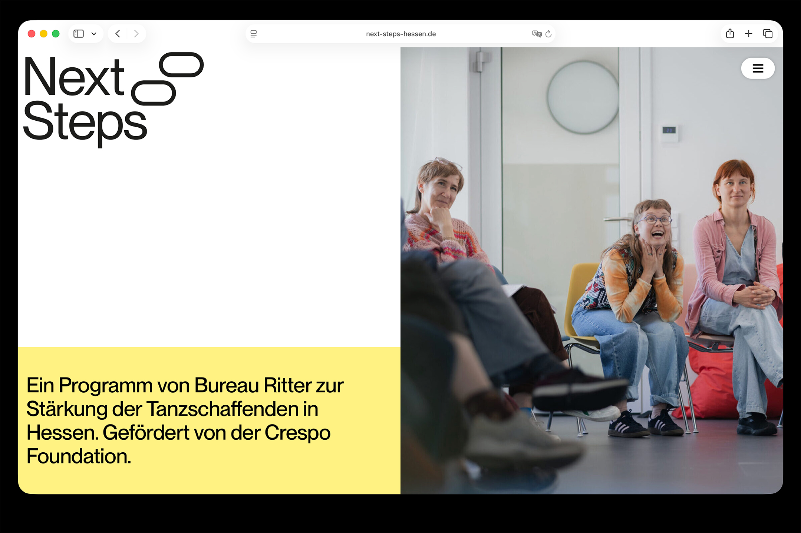
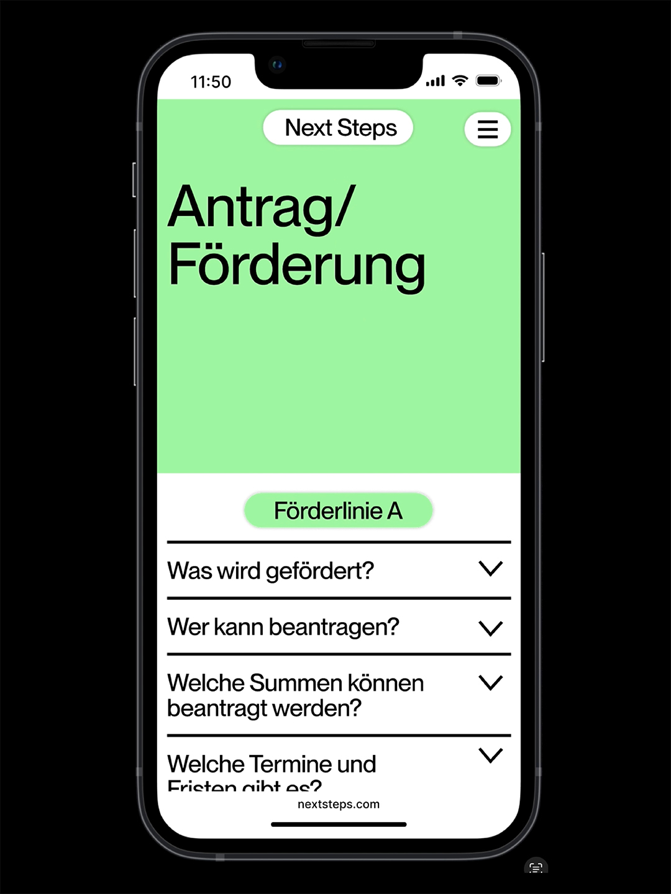
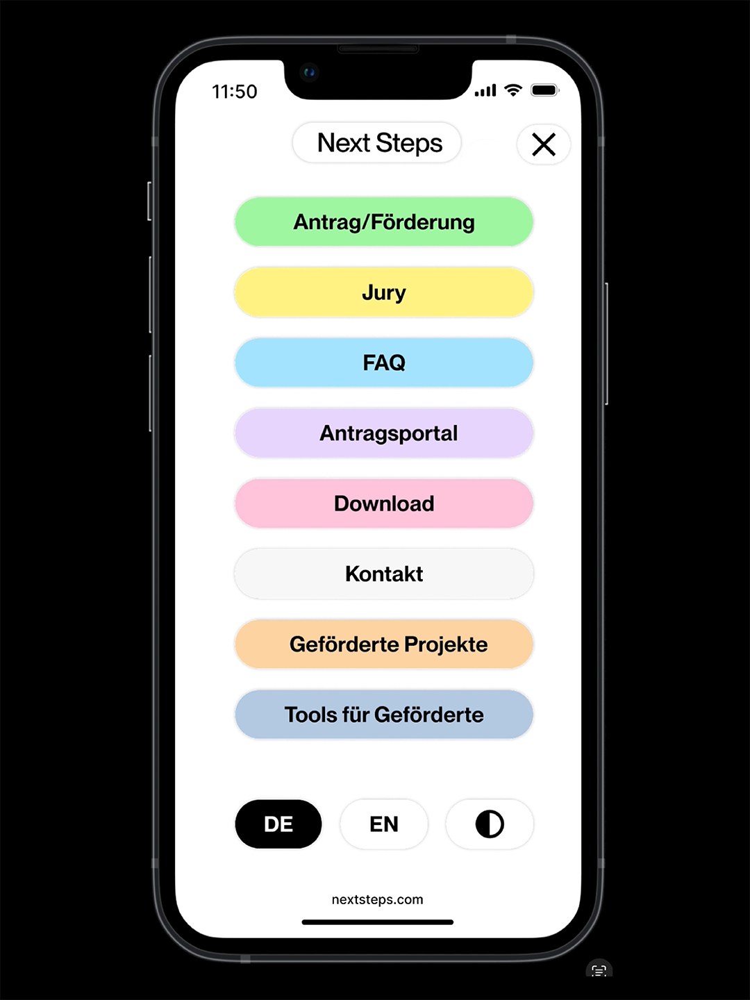
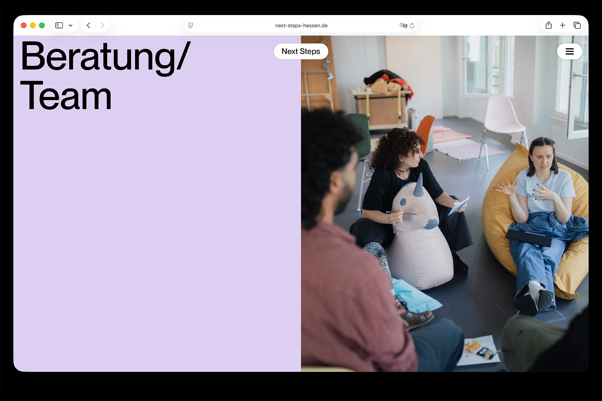
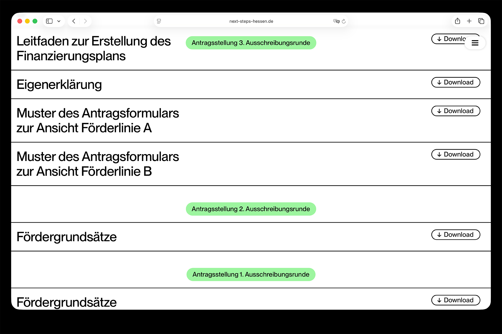
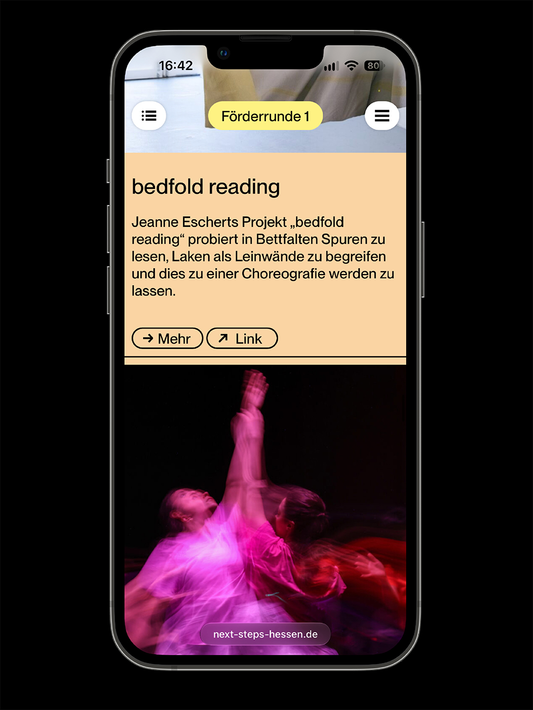
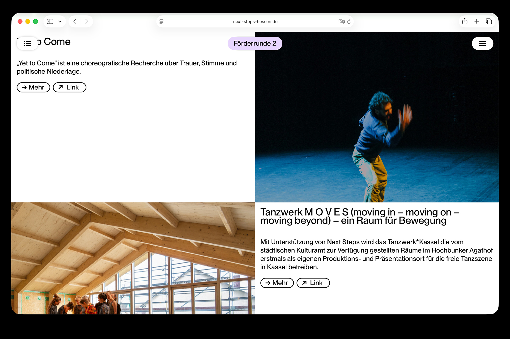
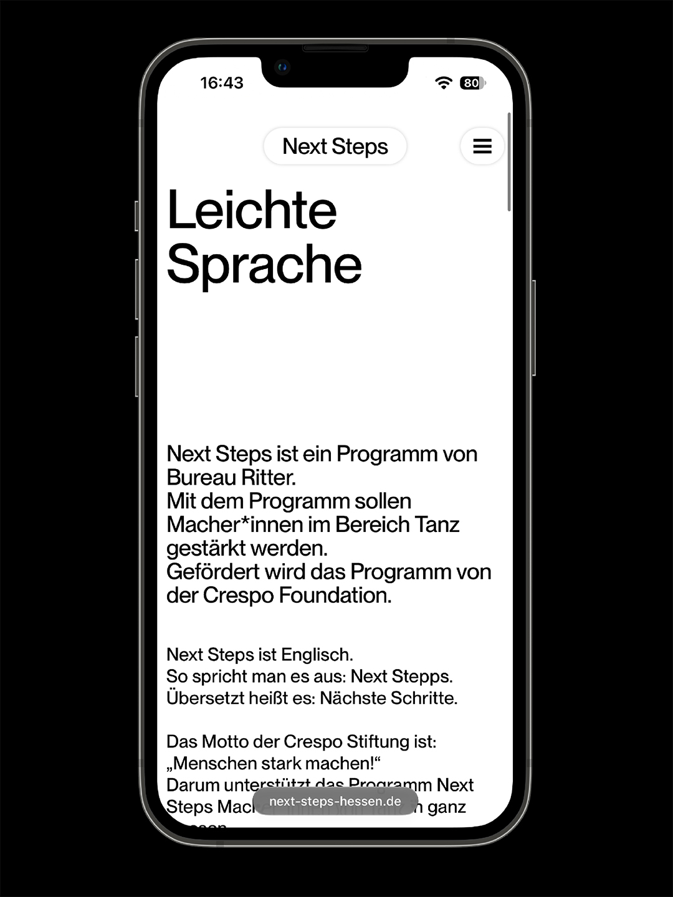
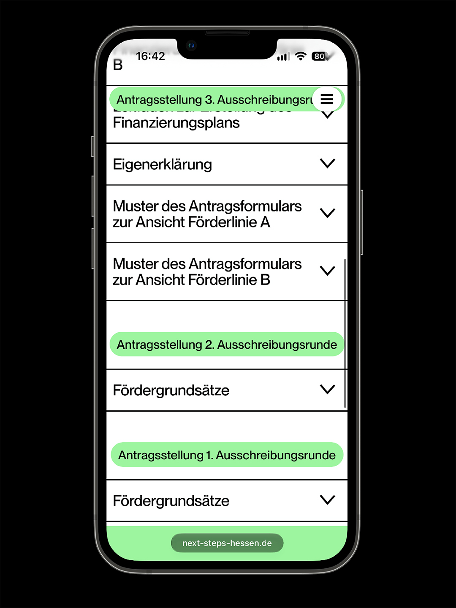
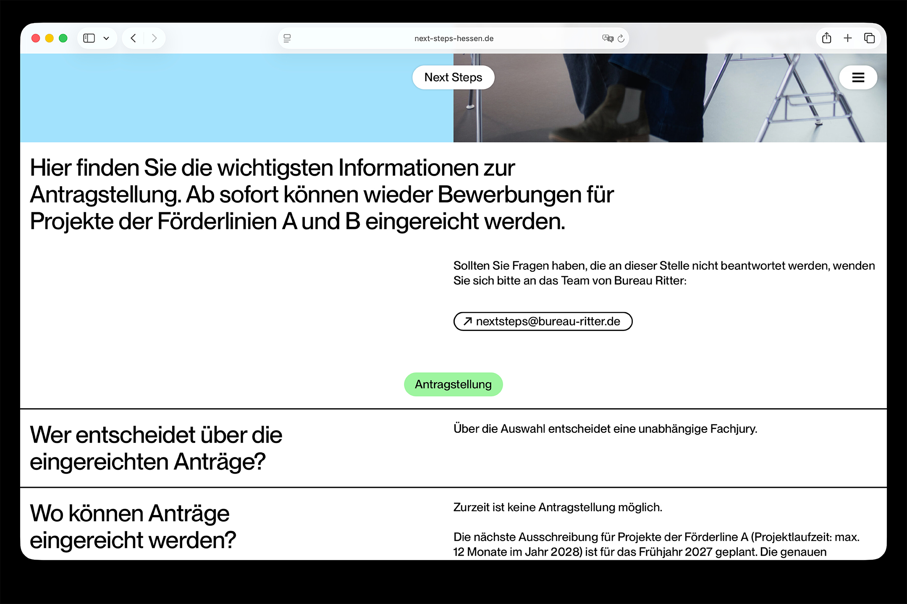

The «Next Steps» programme takes into account the importance of dance as an art form and its specific challenges by addressing the particular situation of the artists and providing them with effective and sustainable support along the way. The design of the website is closely related to the title ‘Next Steps’. This is how you take the next step with the swipe down. The logo is continuously replaced by the subpages, which ensures a high level of overview.









